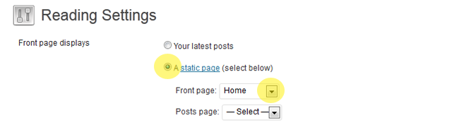
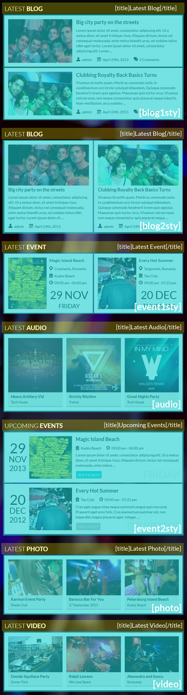

1. About
Hello! Thank you for purchasing SoundWave theme, the greatest SoundWave's wordpress theme! If you have any questions you can get in contact with me, please send a message via my contact form.
This theme is compatible with the next browsers : ie9, ie10, google chrome, mozilla firefox, opera, safari.
SPECIAL FEATURES
Non-stop music - The only theme that allows you to navigate on the site with the music on and not stopping.
Radio stream - It's similar to Non-stop music but the only difference is that the music is from a radio station.
EVENTS
SoundWave can display your upcoming events in a really nice manner. You can display each event on their own map, the lenght of the event and also the availability of the tickets.
AUDIO
What this chapter offers you is that you can post a full album from an artist using self hosted audio files or embedded sounds from SoundCloud. You can also post the genre of music, release date, and if you want you can purchase the album.
VIDEO
If you want to share any kind of videos from YouTube or Vimeo you are in the right place.
PHOTO
SoundWave also allows you to have how manny photo albums you like. Once you create the desired album, in there you can post any gallery that pleasures you.
DJ-MIX
This feature gives you the opportunity to upload mixes from different Dj's.
ARTISTS
This section is for personal data and information about the artists in the music industry.
THEME OPTIONS
This theme allows you to easily upload a background image OR you can choose a background pattern from the Style of the theme. The logo, favicon, menu and link colors, sliders images and anything else is completely adjustable in the Theme Options.
Images, videos or songs are not included in the download of the template.
Songs are purchased from beatport.com. You must purchase them separately.
Also the font that is used in the theme belongs to Google Web Fonts.
2. Installation
Please make sure that you are using the latest version of Wordpress before you install SoundWave. Information on how to install Wordpress you can find here.
2.1 - Upload SoundWave tou your server via ftp
Unpack the Theme's zip file you have downloaded.
Upload the /soundwave folder to the /wp-content/themes directory in your WordPress installaion on your server.
Login to your WordPress admin.
Click Appearance >Themes
Look for the SoundWave theme and click Activate.
2.2 - Upload CLUBBER via the wordpress
Login to your WordPress admin.
Click Appearance > Themes > Add New Theme > Upload Theme (Make sure you are not uploading the whole zip file that you've downloaded from Themeforest but only the clubber.zip file)
Install WordPress Themes [VIDEO]2.4 - Install plugin "Responsive Menu"
This plugin is required for responsive menu.
Login to your WordPress admin.
Click Plugins > Add New > Upload Plugin (plugin/responsive-menu.zip)
3. Pages
3.1 - Setting up the Homepage
Click Pages > Add New.
You can give this page a title, eg. "Home". You don't have to include any content.
Before you want to publish the page you can select if you want to have the sidebar layout on the left or the right side.(the full width home page is inaccessible)
Click Publish.
Now you can add the new page to your menu.
Now click Settings > Reading and select Front page displays a static page. Select the page you just created, eg. "Home" as your Front page and click Save Changes.
The Homepage displays posts in the center has a left or a right sidebar, in which you can drag and drop widgets. Simply go to Appearance > Widgets and add any widgets to "sidebar page".
3.2 - Adding a slideshow to the homepage
Click Slider > Add New
To add a image go to : Featured image > Set featured image (the image must be 985x430px or 665x350px)
Slide descrition, slide URL (not obligatory).
Click Publish
To activate the slide Click Options > Slider > Slider (check the box)
3.3 - Setting up the Blog Page
Click Pages > Add New.
Look for Page Attributes on the right side and click on the Template drop-down menu. Select the "Blog Style 1" or "Blog Style 2" template.
You can give this page a title, eg. "Blog". You don't have to include any content.
Click Publish
Now you can add the new page to your menu.
Click Events > Add New
To set a photo as a cover : Featured image > Set featured image
Click Publish
3.4 - Setting up the Event Page
Click Pages > Add New.
Look for Page Attributes on the right side and click on the Template drop-down menu. Select the "Event Style 1, Event Style 2 or Event Style 3" template.
You can give this page a title, eg. "Events". You don't have to include any content.
Click Publish
Now you can add the new page to your menu.
Click Events > Add New
To set a photo as a cover : Featured image > Set featured image
Enter title, date, location, venue, price, status, zoom map and Ticket URL.
Click Publish
3.5 - Setting up the Audio Page
Click Pages > Add New.
Look for Page Attributes on the right side and click on the Template drop-down menu. Select the "Audio Style 1 or Audio Style 2" template.
You can give this page a title, eg. "Audio". You don't have to include any content.
Click Publish
Now you can add the new page to your menu.
Click Audio > Add New
To set a photo as cover: Featured image > Set featured image
Enter title, release date, buy link, genre, artist, price.
For uploading songs on the Audio Single Page you must Click Upload Audio > Upload Files > Select Files (only .mp3 files) or use SoundCloud shortcode.
Click Publish
3.6 - Setting up the Photo Page
Click Pages > Add New
Look for Page Attributes on the right side and click on the Template drop-down menu. Select the "Photo Style 1 or Photo Style 2" template.
You can give this page a title, eg. "Photos". You don't have to include any content.
Click Publish
Now you can add the new page to your menu.
Click Photos > Add New
To set a photo as cover : Featured image > Set featured image
To upload more photos Click Upload Photo > Upload Files > Select Files.
Click Publish
3.7 - Setting up the Video Page
Click Pages > Add New
Look for Page Attributes on the right side and click on the Template drop-down menu. Select the "Video Style 1 or Video Style 2" template.
You can give this page a title, eg. "Videos". You don't have to include any content.
Click Publish
Now you can add the new page to your menu.
Click Videos > Add New
To set a photo as cover : Featured image > Set featured image
Enter title, link (YouTube or Vimeo) and release or venue.
Click Publish
3.8 - Setting up the Dj Mixes Page
Click Pages > Add New
Look for Page Attributes on the right side and click on the Template drop-down menu. Select the "Dj Mixes" template.
You can give this page a title, eg. "Dj Mixes". You don't have to include any content.
Click Publish
Now you can add the new page to your menu.
Click Videos > Add New
To set a photo as cover : Featured image > Set featured image
Enter title, release or genre and buy mix.
For uploading songs on the Dj Mixes Page you must Click Upload Audio > Upload Files > Select Files (only .mp3 files)
Click Publish
3.9 - Setting up the Artists Page
Click Pages > Add New
Look for Page Attributes on the right side and click on the Template drop-down menu. Select the "Artist Style 1 or Artist Style 2" template.
You can give this page a title, eg. "Artists". You don't have to include any content.
Click Publish
Now you can add the new page to your menu.
Click Videos > Add New
To set a photo as cover : Featured image > Set featured image
Enter title, birth name, born, birthplace, genres, years active, website.
Click Publish
3.10 - Setting up the Contact Page
Click Pages > Add New
Look for Page Attributes on the right side and click on the Template drop-down menu. Select the "Contact" template.
You can give this page a title, eg. "Contact". You don't have to include any content.
Click Publish
Now you can add the new page to your menu.
3.11 - Create category
For creating events categories with the 5 different styles.
Create a category (eg: party), after that you have to create a file named taxonomy-events-party.php which needs to be placed in the soundwave theme folder. Then enter in one of the styles event-style1.php ("Event Style 1"), event-style1up.php ("Event Style 1 (UPCOMING)"), event-style2.php ("Event Style 2"), event-style2up.php ("Event Style 2 ("UPCOMING)") or event-style3.php ("Event Style 3"), and copy the whole content from that file, after this enter in the file created by you taxonomy-events-party.php in which you add the whole content.
For creating photos categories with the 2 different styles.
Create a category (eg: party), after that you have to create a file named taxonomy-photos-party.php which needs to be placed in the soundwave theme folder. Then enter in one of the styles photo-style1.php ("Photo Style 1 (4 COLUMNS)") or photo-style2.php ("Photo Style 2 (3 COLUMNS)") and copy the whole content from that file, after this enter in the file created by you taxonomy-photos-party.php in which you add the whole content.
For creating videos categories with the 2 different styles.
Create a category (eg: party), after that you have to create a file named taxonomy-videos-party.php which needs to be placed in the soundwave theme folder. Then enter in one of the styles video-style1.php ("Video Style 1 (4 COLUMNS)") or video-style2.php ("Video Style 2 (3 COLUMNS)") and copy the whole content from that file, after this enter in the file created by you taxonomy-videos-party.php in which you add the whole content.
For creating audio categories with the 2 different styles.
Create a category (eg: party), after that you have to create a file named taxonomy-audios-party.php which needs to be placed in the soundwave theme folder. Then enter in one of the styles audio-style1.php ("Audio Style 1 (4 COLUMNS)") or audio-style2.php ("Audio Style 2 (3 COLUMNS)") and copy the whole content from that file, after this enter in the file created by you taxonomy-audios-party.php in which you add the whole content.
For creating artists categories with the 2 different styles.
Create a category (eg: party), after that you have to create a file named taxonomy-artists-party.php which needs to be placed in the soundwave theme folder. Then enter in one of the styles artist-style1.php ("Artist Style 1 (4 COLUMNS)") or artist-style2.php ("Artist Style 2 (3 COLUMNS)") and copy the whole content from that file, after this enter in the file created by you taxonomy-artists-party.php in which you add the whole content.
4. Menu
If you are using Wordpress 3.0 or higher you can make use of the built in Menu functionality.
This is how you create your Menu:
Click Appearance > Menus
On the top right side enter any name for your new Menu and click Create Menu.
Add Menu Items to your Menu by dropping custom links, pages or categories into your custom menubar.
To have the responsive menu, please put top-menu on Menu Name.
5. Theme Option Panel
5.1 - General
AJAX
Active Player
Audio/Radio
Logo
Favicon
Google Analytics CODE
5.2 - Template Settings
Header Features
Banner CODE
Sidebar Layout for Single Page Blog
Sidebar Layout for Single Page Events
Number of Videos per page
Number of Audio per page
Number of Photos per page
Number of Events per page
Number of Artists per page
Shortcode Events Category
Shortcode Audio Category
Shortcode Photos Category
Shortcode Videos Category
5.3 - Style
Theme Color
Fonts
Background
Background Pattern
Background Image
5.4 - Slider
Slider
Slider Type
Number of Slides
Animation
Slideshow Speed
Animation Speed
5.5 - Audio
AutoPlay
Player: visible/hidden
Play Next When Finished
Audio for Home page
5.6 - Radio
Stream IP/Domain
AutoPlay
Player: visible/hidden
Title
Informations
5.7 - Social Media
Icons Social Header
Icons Social Footer
Logo Social
Digg
YouTube
Vimeo
RSS
Flickr
VK
Google+
LastFM
Amazon
Beatport
MySpace
5.8 - Custom CSS
5.9 - Contact
Email Address
Subject
6. Sidebars and Widgets
6.1 - Sidebars
SoundWave comes with 10 sidebars:
Blog Single - Sidebar
Blog Archive - Sidebar
Event Single - Sidebar
Event Archive - Sidebar
Dj Mixes - Sidebar
Footer Widget 1
Footer Widget 2
Footer Widget 3
Footer Widget 4
Simply go to Appearance > Widgets to drag and drop any widgets to your sidebars.
6.2 - General
I added 8 custom widgets to this theme:
You find the following widgets in Appearance > Widgets.
SoundWave - Recent Posts (Recent posts on your blog site)
SoundWave - Upcoming Events (Display your latest Events)
SoundWave - Latest Videos (Display your latest Videos)
SoundWave - Photos (Display your latest Photos)
SoundWave - Audio Player (Display your Audio Player)
SoundWave - SoundCloud (Display your SoundCloud)
SoundWave - Flickr (Display pictures from a flickr acount)
7. Footer
SoundWave's footer is fully widgetized, which means your can insert whatever widgets you like in there.
There are 4 different columns in the footer and each of them supports multiple widgets.
Go to Appearance > Widgets
Drag and drop the desired widgets into the sections "Footer Widget 1", "Footer Widget 2", "Footer Widget 3" and "Footer Widget 4".
If you would like to add links to your social profiles to the footer area, go to the Theme Options Panel and in the tab SOCIAL MEDIA enter the full URL to your social profiles.
8. Shortcodes and columns
8.1 - Shortcodes
 If you made the update for the theme and shortcode doesn't work please enter the Theme Options > Save Options
Blog
If you write this shortcode "[blog1sty]" or "[blog2sty]" it will apear the latest posts from the blog.
Arguments: eg. [blog1sty items=4 sort=desc]
-items=(numbers of posts) eg. items=4
-sort=(tipe of sortation asc/desc) eg. sort=asc
Category
Write on slug the category. eg. [blog1sty cat=news]
Events
If you write this shortcode "[event1sty]" or "[event2sty]" it will apear the latest posts from the event.
If you write this shortcode "[event1up]" or "[event2up]" the events appear in the order of the date.
If you write this shortcode "[event1past]" or "[event2past]" the events appear in the order of the date.
Arguments: eg. [event1sty items=4 sort=desc]
-items=(numbers of posts) eg. items=4
-sort=(tipe of sortation asc/desc) eg. sort=asc
Category use [event2sty cat=slug]
Write on slug the category name. eg. [event2sty cat=clubs]
Audio
If you write this shortcode "[audio]" it will apear the latest posts from the audio.
Arguments: eg. [audio items=4 sort=desc]
-items=(numbers of posts) eg. items=4
-sort=(tipe of sortation asc/desc) eg. sort=asc
Category use [audio cat=slug]
Write on slug the category name. eg. [audio cat=clubs]
Photos
If you write this shortcode "[photo]" it will apear the latest posts from the photo.
Arguments: eg. [photo items=4 sort=desc]
-items=(numbers of posts) eg. items=4
-sort=(tipe of sortation asc/desc) eg. sort=asc
Category use [photo cat=slug]
Write on slug the category name. eg. [photo cat=clubs]
Videos
If you write this shortcode "[video]" it will apear the latest posts from the video.
Arguments: eg. [video items=4 sort=desc]
-items=(numbers of posts) eg. items=4
-sort=(tipe of sortation asc/desc) eg. sort=asc
Category use [video cat=slug]
Write on slug the category name. eg. [video cat=clubs]
Artists
If you write this shortcode "[artist]" it will apear the latest posts from the artist.
Arguments: eg. [artist items=4 sort=desc]
-items=(numbers of posts) eg. items=4
-sort=(tipe of sortation asc/desc) eg. sort=asc
Category use [artist cat=slug]
Write on slug the category name. eg. [artist cat=clubs]
Dj Mix
If you write this shortcode "[mix]" it will apear the latest posts from the mixes.
Arguments: eg. [mix items=4 sort=desc]
-items=(numbers of posts) eg. items=4
-sort=(tipe of sortation asc/desc) eg. sort=asc
Category use [mix cat=slug]
Write on slug the category name. eg. [mix cat=clubs]
Title
[title]Title[/title]
SoundCloud
HTML 5
[soundcloud url="http://api.soundcloud.com/tracks/65379517" params="auto_play=false&show_artwork=true&color=ff7700" width="100%" height="166" iframe="true" /]
Flash
[soundcloud]http://soundcloud.com/djkozak/dj-kozak-lets-swing[/soundcloud]
Button
[button link="http://www.mydomain"]Click me![/button]
Tabs
[tabs] [tab title="Tab 1"] Tab 1 content [/tab] [tab title="Tab 2"] Tab 2 content [/tab] [tab title="Tab 3"] Tab 3 content [/tab] [/tabs]
Toggle
[toggle title="Toggle title"] Hidden content [/toggle]
Highlight
[highlight] highlighted text [/highlight] - the color is predefined by the theme
[highlight2] highlighted text [/highlight2] - the color #333333
Dropcap (it's a shortcode that enlarge's the first letter from a paragraph)
[dropcap]First letter [/dropcap]
Quotes
[quote_left]Quotes [/quote_left]
[quote_right]Quotes [/quote_right]
Photo Pretty
[photo_pretty width="250" height="150"]http://mydomain/my-audio-file.jpg[/photo_pretty]
Video Pretty
[video_pretty img="http://mydomain/my-audio-file.jpg" width="250" height="150"]http://youtu.be/Bk_TmVnghao[/video_pretty]
Bar
[bar][/bar] - dashed lines
Space
[space][/space]
8.2 - Columns
One Half
[one_half] ... [/one_half] [one_half_last] ... [/one_half_last]
One Third
[one_third] ... [/one_third] [one_third] ... [/one_third][one_third_last] ... [/one_third_last]
Two Third
[two_third] ... [/two_third] [one_third_last] ... [/one_third_last]
One Fourth
[one_fourth] ... [/one_fourth] [one_fourth] ... [/one_fourth] [one_fourth] ... [/one_fourth] [one_fourth_last] ... [/one_fourth_last]
One Fifth
[one_fifth] ... [/one_fifth] [one_fifth] ... [/one_fifth] [one_fifth] ... [/one_fifth] [one_fifth] ... [/one_fifth] [one_fifth_last] ... [/one_fifth_last]
Two Third
[two_third] ... [/two_third] [one_third_last] ... [/one_third_last]
Four Fifth
[four_fifth] ... [/four_fifth] [one_fifth_last] ... [/one_fifth_last]
Two Fifth
[two_fifth] ... [/two_fifth] [three_fifth_last] ... [/three_fifth_last]
Three Fifth
[three_fifth] ... [/three_fifth] [two_fifth_last] ... [/two_fifth_last]
One Sixth
[one_sixth] ... [/one_sixth] [one_sixth] ... [/one_sixth] [one_sixth] ... [/one_sixth] [one_sixth] ... [/one_sixth] [one_sixth] ... [/one_sixth] [one_sixth_last] ... [/one_sixth_last]
Five Sixth
[five_sixth] ... [/five_sixth] [one_sixth_last] ... [/one_sixth_last]
One Sixth
[one_sixth] ... [/one_sixth] [five_sixth_last] ... [/five_sixth_last]
9. Video tutorials
Setting homepage & create menu
Setting image background, color & font
Photos, Videos and Artists categories shortcode
Download base date: http://soundwave.wizedesign.com/info/soundwave.sqlUsername: admin
Password: soundwave
10. Credits
I've used the following scripts, files, and other files in this theme:
11. Changelog
How to update to the theme:
Please delete the old theme, install the latest version and then log in wp-admin and press F5 and then go to Theme Options > Save Changes. All the posts will remain saved.
Version 2.2 - Released: 28 June 2015
- modified: style.css
- modified: css-option.php
- modified: functions.php
- modified: js/prettyPhoto.js
- modified: js/script.js
- modified: css/responsive.css
- modified: blog-style1.php
- modified: blog-style1.php
Version 2.1.1 - Released: 18 November 2014
- modified: admin/post/upload.js
- modified: includes/shortcodes/shortcode-soundcloud.php
Version 2.1 - Released: 23 October 2014
- Translate ready to any language easily
- added: languages/default.mo
- added: languages/default.po
- added: event-style1past.php
- added: event-style2past.php
- added: event-style2up&past.php
- added: event-style3past.php
- added: event-style3up&past.php
- I modified all the theme files so it can be translated easily. I recommend you to update the whole theme, not a file at a time.
Version 2.0 - Released: 29 April 2014
- RESPONSIVE
- To have the responsive menu, please put top-menu on Menu Name.
- added: css/responsive.css
- added: js/selectnav.js
- added: js/respond.js
- modified: js/script.js
- modified: banner-features.php
- modified: event-style1up.php
- modified: functions.php
- modified: style.css
Version 1.9.1 - Released: 04 March 2014
- Fixing bugs
- modified: functions.php
- modified: style.css
- modified: includes/functions-layout.php
- modified: admin/event.php
Version 1.9 - Released: 24 December 2013
- modified: admin/theme_options/options.php
Version 1.8 - Released: 03 December 2013
- The errors from the different files have been solved.
- modified: artist-style1.php
- modified: artist-style2.php
- modified: audio-style1.php
- modified: audio-style2.php
- modified: event-style1.php
- modified: event-style1up.php
- modified: event-style2.php
- modified: event-style2up.php
- modified: event-style3.php
- modified: photo-style1.php
- modified: photo-style2.php
- modified: video-style1.php
- modified: video-style1.php
Version 1.7 - Released: 12 September 2013
- added: social icons - Resident Advisor
- modified: admin/theme_options/options.php
- modified: admin/theme_options/options-sanitize.php
- modified: includes/shortcodes/shortcode-blog.php
- modified: event-style1up.php
- modified: footer.php
- modified: header.php
- modified: scriptjs.php
- modified: blog-style1.php
- modified: blog-style2.php
- modified: style.css
Version 1.6 - Released: 22 August 2013
- modified: event-style1up.php
- modified: event-style2up.php
- modified: event-style3.php
Version 1.5 - Released: 12 August 2013
- Compatible with Wordpress 3.6
- modified: admin/post/js/ui-custom.js
- modified: admin/post/js/setup.js
- modified: event-style1.php
- modified: event-style1up.php
- modified: event-style2.php
- modified: event-style2up.php
- modified: event-style3.php
- modified: single-event.php
Version 1.4 - Released: 09 August 2013
- added: includes/shortcodes/shortcode-artist.php
- modified: style.css
- modified: functions.php
- modified: footer.php
- modified: header.php
- modified: css/shortcodes.css
- modified: css/prettyPhoto.css
- modified: admin/theme_options/options.php
- modified: includes/shortcodes/shortcode-audio.php
- modified: includes/shortcodes/shortcode-event.php
- modified: includes/shortcodes/shortcode-photo.php
- modified: includes/shortcodes/shortcode-video.php
- modified: includes/language/EN.php
- modified: includes/language/RO.php
- modified: includes/language/ES.php
- modified: includes/language/FR.php
- modified: includes/language/DE.php
- modified: includes/language/IT.php
- modified: includes/language/NL.php
- modified: includes/language/PT.php
- modified: includes/functions-layout.php
Version 1.3 - Released: 05 July 2013
- added: social icons - SoundCloud, Mixcloud, Tumblr and Instagram
- added: Language of the Date
- added: includes/language.php
- added: includes/language/EN.php
- added: includes/language/RO.php
- added: includes/language/ES.php
- added: includes/language/FR.php
- added: includes/language/DE.php
- added: includes/language/IT.php
- added: includes/language/NL.php
- added: includes/language/PT.php
- modified: admin/event.php
- modified: admin/theme_options/options.php
- modified: admin/theme_options/css/admin-style.css
- modified: event-features.php
- modified: event-style1.php
- modified: event-style1up.php
- modified: event-style2.php
- modified: event-style2up.php
- modified: event-style3.php
- modified: single-event.php
- modified: player.php
- modified: includes/widgets/widget-events.php
- modified: includes/shortcodes/shortcode-photo.php
- modified: includes/shortcodes/shortcode-event.php
- modified: style.css
Version 1.2 - Released: 28 June 2013
- added: Twitter Widget
- added: social icons - Google+ and VK
- added: widget-twitter.php
- added: event-style1up.php
- added: event-style2up.php
- modified: style.css
- modified: options.php
- modified: header.php
- modified: footer.php
- modified: readme.txt
Version 1.1 - Released: 06/23/2013
- modified: style.css - Fix: IE8, IE9, IE10
Version 1.0 - Released: 21 June 2013
- Initial release.